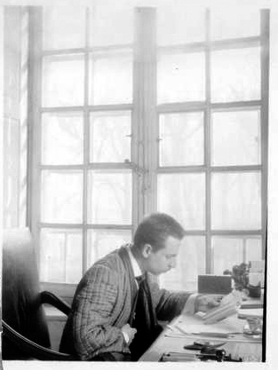
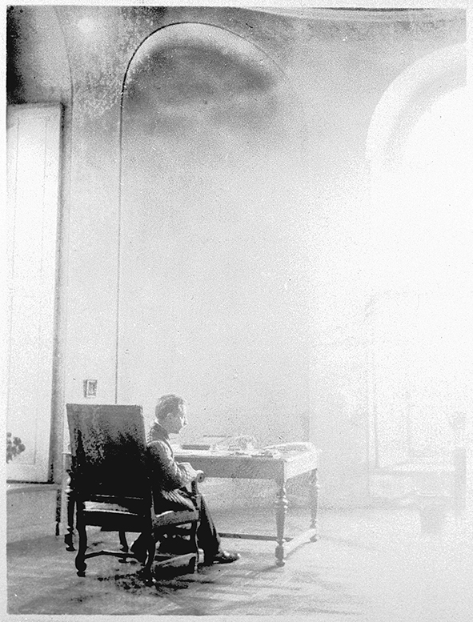
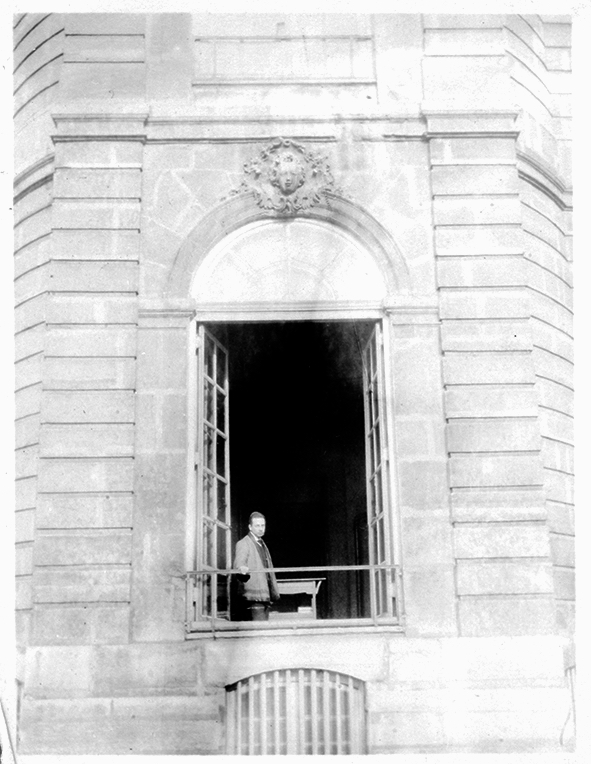
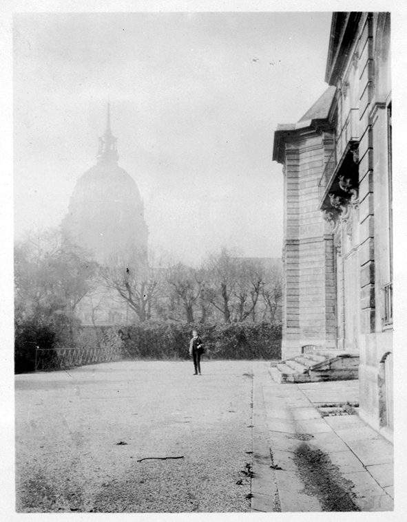

Rilke na starej fotografii
Paryż, Hôtel Biron 1908
Rilke w paryskim Hôtel Biron. Poeta wynajmował tam pokoje w latach 1908-1911. Jego sąsiadem był przez pewien czas Auguste Rodin, który urządził w budynku swoje atelier. Widoczne na fotografii biurko było własnością rzeźbiarza. Pałac przy rue de Varenne 77, w bezpośrednim sąsiedztwie Dôme des Invalides, jest dziś siedzibą Museé Rodin.
Odwiedziłem Rilkego, który zamieszkał w skonfiskowanym klasztorze sióstr Sacré-Coeur, dawnym Hôtel Biron, przy rue de Varenne 77. Na parterze zajmuje wysokie, okrągłe, narożne pomieszczenie, w którym pracuje, z widokiem na ogród. Obok niego mieści się sypialnia. W swojej elegancji i nieco majestatycznym opuszczeniu gabinet jest scenerią, w której można sobie wyobrazić Szaleńca i Śmierć Hofmannsthala.
Rilke wystarał się o kilka empirowych krzeseł i duży, stary, barokowy stół, który służy mu jako biurko, a także o kilka pulpitów z naczyniami, ozdobionymi pięknymi dojrzałymi owocami, i wazonami wypełnionymi kwiatami. Popiersie dłuta jego żony stoi przed oknem wychodzącym na ogród. Wnętrze jest puste, acz nie zmrożone, z powodu piękna proporcji i światła.
Przeczytał mi swoje Requiem dla Wolfa von Kalckreuth. Podczas lektury jego profil wyróżniał się na tle imponującego, barokowego okna i po raz pierwszy zauważyłem w jego rysach energię. Bardzo ciekawy profil: długie skośne czoło, długi skośny nos, prawie w przedłużeniu czoła, oba wystające jak dziób, pod nimi, niemal wycofane z tej ostrości, ciężkie, grube usta, ciężkie powieki. Czyta lekko pastoralnym tonem, ale z jasną i precyzyjną dykcją. W następnej rozmowie kilkakrotnie mówił o swoim nawyku „pisania przed obliczem natury”. Rodin powiedział mu kiedyś: „Dlaczego nie stanie Pan przed krajobrazem? Niech Pan stanie przed krajobrazem i robi to, co widzi”.
Zapytałem go, co rozumie przez „pisanie przed obliczem natury”. Miał zamiar pisać, wprowadzając do poezji rzeczy, a nie oddalając się od nich. Nie po to, aby przywiązać się do jakiegoś ulotnego wrażenia, aby poprzestać na uczuciach lub rozważaniach, procesie, przez który wiersz narodziłby się wtedy ze swoim słynnym „pięknym początkiem” — lecz aby połączyć uczucie z samymi rzeczami, aby je nim wypełnić. Mówił, że rozpoczął się dla niego nowy okres. Na początku myślał, że nigdy mu się to nie uda, ale czuje, że teraz osiągnął swój cel, etap, kiedy łatwo przychodzi mu „pisać przed obliczem natury”.
— Hrabia Harry Kessler, wpis w dzienniku z 16 listopada 1908 roku